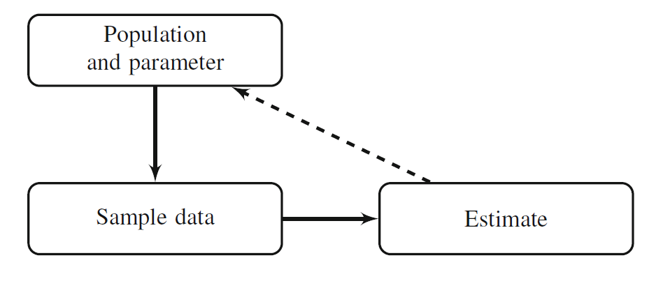
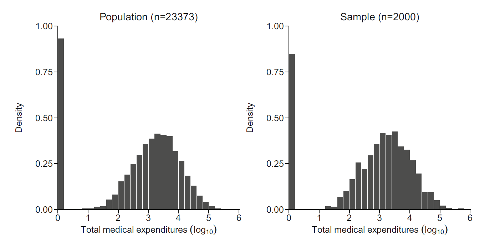
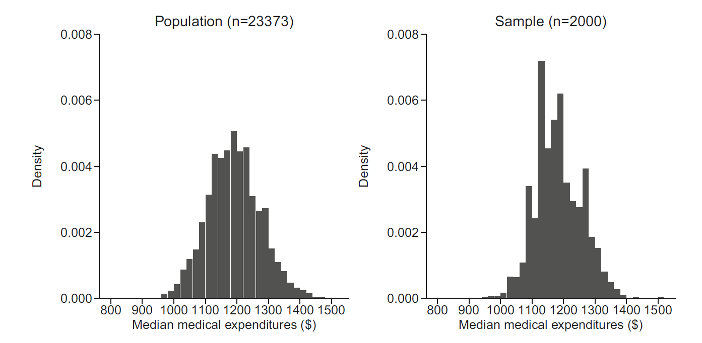
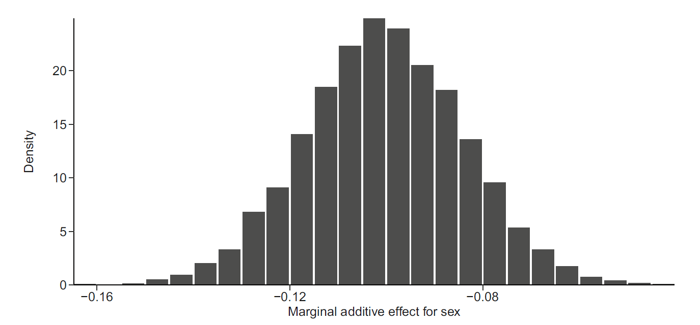
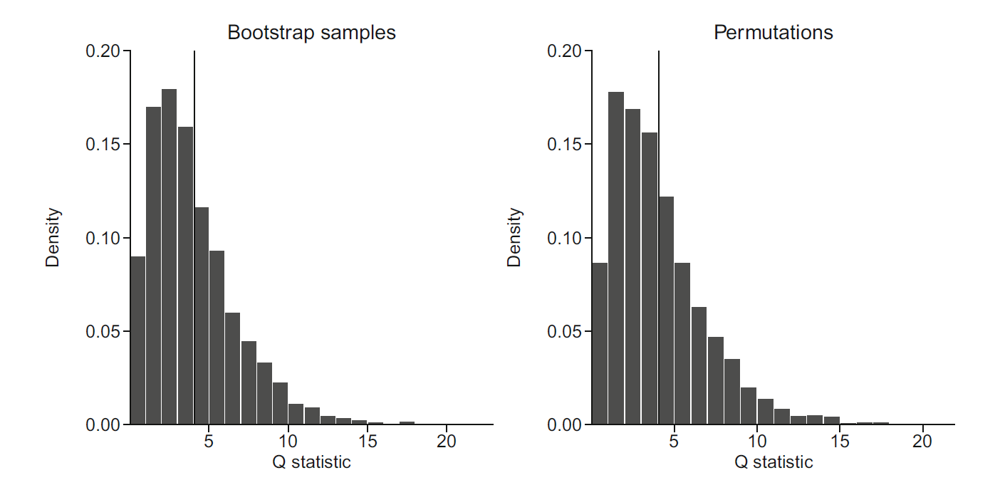

표본자료를 이용하여 모집단의 특성을 추정하면 표본추출 과정에서 비롯되는 불확실성이 필연적으로 발생한다. 같은 모집단에서 같은 설계로 표본을 반복해서 추출하면 표본평균, 중앙값, 회귀계수와 같은 추정량은 매번 조금씩 달라진다. 빈도주의 통계학에서는 이러한 반복표본에서 나타나는 추정량의 변동을 이용하여 불확실성을 정의한다.

이 그림은 모집단에서 표본이 추출되고, 표본으로부터 통계량이 계산되며, 다시 그 통계량을 이용하여 모집단의 특성을 추론하는 과정을 나타낸다. 여기서 불확실성은 관측값 자체가 우연하다는 사실뿐 아니라, 표본을 선택하는 과정과 추정량을 계산하는 과정에 의해 함께 결정된다. 동일한 모집단과 동일한 분석법을 사용하더라도 다른 표본이 선택되면 추정값은 달라질 수 있다. 따라서 표준오차는 관측된 한 표본 안의 산포가 아니라, 동일한 연구절차를 반복했을 때 추정량이 얼마나 변하는지를 나타낸다.
관심 있는 모집단 모수를 \(\theta\)라고 하고, 표본에서 계산한 추정량을 \(\widehat\theta\)라고 하자. 동일한 표본추출과 추정 절차를 반복했을 때 얻어지는 추정량의 분포를 표본분포(sampling distribution)라고 한다. 추정량의 분산과 표준오차는 각각
로 정의된다. 표준오차가 작을수록 동일한 절차를 반복했을 때 추정값이 좁은 범위에 모이며, 추정의 정밀도가 높다. 그러나 정밀도가 높다고 해서 반드시 정확한 추정은 아니다. 추정량의 평균이 참값에서 벗어나 있으면 표준오차가 작더라도 체계적 편향이 존재할 수 있다. 추정량의 전체 오차는 평균제곱오차(mean squared error, MSE)로 정리할 수 있다.
따라서 불확실성 평가에서는 변동뿐 아니라 편향도 함께 고려해야 한다. 부트스트랩은 주로 추정량의 변동과 유한표본 편향을 추정하지만, 표본선택 편향이나 측정오류처럼 관측자료 자체에 내재한 체계적 편향을 자동으로 제거하지는 않는다.
전통적인 통계추론은 정규성, 독립성 또는 큰 표본에서의 점근적 성질을 이용하여 표준오차와 신뢰구간의 공식을 유도한다. 그러나 중앙값, 분위수, 복잡한 주변효과, 2부분 모형에서 결합된 효과처럼 추정량의 분포가 복잡한 경우에는 해석적 공식을 구하기 어렵다. 부트스트랩은 이때 관측표본을 경험적 모집단으로 간주하고 재표본추출을 반복하여 표본분포를 근사한다. 이를 보다 엄밀하게 쓰면, 추정량을 분포 \(F\)의 함수 \(T(F)\)로 보고 미지의 \(F\)를 경험적 분포 \(\widehat F_n\)으로 대체하는 플러그인 원리(plug-in principle)를 사용한다. 원래 표본분포가
가 성립한다. 즉 표본크기가 증가하면 경험적 분포가 전체 구간에서 모집단 분포에 가까워진다. 이 성질은 경험적 분포를 모집단 분포의 대용물로 사용하는 기본 근거이다. 다만 추정량이 분포의 작은 변화에 지나치게 민감하거나 경계에서 정의되는 비정규 문제에서는 경험적 분포의 수렴만으로 일반 부트스트랩의 타당성이 보장되지는 않는다.
원자료가 오른쪽으로 치우치고 0이 많은 의료비 자료라면 정규근사에 의존한 표준오차가 부정확할 수 있다. 다음 그림은 전체 자료와 그중 일부를 무작위로 추출한 표본에서 총의료비의 로그분포가 유사함을 보여준다.

그림에서 표본의 히스토그램은 모집단 역할을 하는 전체 자료의 오른쪽 꼬리와 0 부근의 질량을 대체로 재현하지만, 완전히 동일하지는 않다. 부트스트랩은 바로 이 표본을 다시 경험적 모집단으로 사용한다. 따라서 원표본에서 우연히 관측되지 않은 매우 큰 비용이나 드문 하위집단은 비모수 부트스트랩에서도 새롭게 생성되지 않는다. 부트스트랩이 표본추출 변동을 근사할 수는 있지만, 원표본이 포착하지 못한 모집단의 구조를 복원하지는 못한다는 점이 중요하다.
7.2.2 부트스트랩 알고리즘
관심 통계량을 \(T=T(X_1,\ldots,X_n)\)이라 하자. 비모수 부트스트랩 절차는 다음과 같다.
원표본에서 크기 \(n\)의 부트스트랩 표본 \(X_1^{*(b)},\ldots,X_n^{*(b)}\)을 복원추출한다.
각 부트스트랩 표본에서 통계량 \(T^{*(b)}\)를 계산한다.
이 과정을 \(b=1,\ldots,B\)에 대해 반복한다.
\(T^{*(1)},\ldots,T^{*(B)}\)의 분포를 이용하여 표준오차, 편향, 신뢰구간 또는 검정통계량의 귀무분포를 추정한다.
이다. 따라서 비모수 부트스트랩은 관측값을 직접 다시 나열하는 방법뿐 아니라, 각 관측값에 다항분포 가중치를 부여하는 방법으로도 이해할 수 있다. 이러한 표현은 가중 부트스트랩과 베이지안 부트스트랩을 이해하는 기초가 된다.
7.2.3 왜 복원추출하는가
복원추출을 하지 않고 크기 \(n\)의 표본을 다시 뽑으면 원표본과 동일한 관측값이 한 번씩 포함되어 통계량도 변하지 않는다. 복원추출을 하면 어떤 관측값은 여러 번 포함되고 어떤 관측값은 빠지면서, 원표본을 경험적 모집단으로 보았을 때 가능한 표본 간 변동을 재현할 수 있다.
\[
\operatorname{SE}(\widehat m)
\approx
\frac{1}{2\sqrt n f(m)}
\]
이다. 중앙값 주변의 밀도가 높으면 작은 자료변화에도 중앙값이 거의 움직이지 않으므로 표준오차가 작고, 밀도가 낮으면 표준오차가 커진다. 실제로 \(f(m)\)을 안정적으로 추정하기 어렵기 때문에 부트스트랩이 유용하다.
다만 0이 매우 많은 반연속 자료에서는 중앙값이 0의 점질량에 걸릴 수 있다. 이 경우 중앙값의 표본분포가 이산적이거나 비정규적일 수 있으며, 부트스트랩 분포에 동일한 값이 반복되어 나타난다. 따라서 표준오차뿐 아니라 부트스트랩 분포의 형태와 신뢰구간의 경계도 함께 확인해야 한다.

그림의 부트스트랩 중앙값 분포는 원자료에서 가능한 중앙값의 반복표본 변동을 근사한다. 분포의 중심이 원표본 중앙값과 일치하지 않으면 유한표본 편향의 가능성을 시사하고, 분포가 한쪽으로 치우치거나 계단형이면 정규근사 신뢰구간보다 백분위수 또는 BCa 구간을 고려할 근거가 된다.
다음 코드는 0이 많고 오른쪽으로 치우친 의료비 자료를 생성한 뒤 중앙값의 부트스트랩 표준오차를 계산한다.
부트스트랩이 신뢰할 만한 결과를 주려면 원표본이 모집단을 적절히 대표해야 하고, 재표본추출 횟수가 충분해야 하며, 부트스트랩 과정이 원래의 표본설계를 반영해야 한다. 층화표본이면 층 안에서 재표본추출하고, 군집표본이면 개인이 아니라 군집을 재표본추출해야 한다.
부트스트랩의 타당성은 추정량의 정규성 여부 자체보다, 경험적 분포의 작은 변화가 추정량의 작은 변화로 이어지는지에 더 직접적으로 관련된다. 평균, 회귀계수와 매끄러운 주변효과는 일반적으로 부트스트랩이 잘 작동하는 반면, 표본 최댓값, 변화점, 경계에 있는 분산성분, 변수를 선택한 직후의 계수처럼 비정규적이고 비매끄러운 추정량에서는 일반 \(n\)-중-\(n\) 부트스트랩이 실패할 수 있다.
7.4 회귀모형에서의 부트스트랩
7.4.1 회귀계수의 표준오차
회귀모형에서는 관측 단위를 행 단위로 복원추출한 뒤 각 표본에서 동일한 모형을 다시 적합한다. 이를 관측쌍 부트스트랩(case or pairs bootstrap)이라고 한다. 공변량과 결과의 결합분포를 함께 재표본추출하므로 공변량을 확률변수로 보는 무작위 설계에 자연스럽고, 이분산성에도 비교적 강건하다.
반면 실험처럼 공변량 행렬 \(\mathbf X\)를 고정된 설계로 간주하면, 관측쌍 부트스트랩은 원래 연구가 조건부로 삼은 \(\mathbf X\)까지 바꾸게 된다. 이 경우에는 잔차 부트스트랩, 모수적 부트스트랩 또는 와일드 부트스트랩이 더 적절할 수 있다. 즉 회귀 부트스트랩의 재표본 단위는 단순한 계산 선택이 아니라, 추론이 조건부인지 주변적(unconditional)인지에 대한 선택이다.
로지스틱 회귀계수처럼 최대우도이론에 의한 표준오차가 제공되는 경우에도 부트스트랩 결과와 비교하여 점근적 근사의 적절성을 확인할 수 있다. 최대우도추정량이 정규조건을 만족하면
비선형 연결함수를 사용하는 일반화선형모형에서는 회귀계수가 결과확률의 직접적인 차이를 나타내지 않는다. 성별의 주변가산효과를 구하려면 모든 사람의 성별을 여성으로 설정한 예측확률 \(\widehat\pi_{1i}\)와 남성으로 설정한 예측확률 \(\widehat\pi_{0i}\)를 계산한 뒤 평균차이를 구한다.
이 추정량은 회귀계수 하나의 함수가 아니라, 적합된 모든 계수와 분석표본의 공변량 분포를 동시에 사용하는 복합 함수이다. 델타 방법으로 표준오차를 구하려면 계수벡터에 대한 기울기를 계산해야 하지만, 부트스트랩에서는 각 반복마다 모형 적합과 표준화 과정을 모두 다시 수행하면 된다. 즉 불확실성의 원천은 회귀계수 추정뿐 아니라 표준화에 사용된 공변량 분포의 표본변동까지 포함한다.
인과적 해석을 하려면 여성과 남성으로 인위적으로 설정한 두 잠재결과가 교환가능하다는 가정, 양성(positivity), 일관성 및 올바른 모형 지정이 추가로 필요하다. 이러한 가정이 없으면 이 값은 보정된 예측확률의 평균차이로 해석해야 한다.

그림은 성별 상태를 바꾸어 계산한 두 표준화 확률의 차이를 부트스트랩 반복마다 다시 추정한 분포를 보여준다. 분포의 폭은 회귀계수와 공변량 분포의 결합된 불확실성을 반영한다.
marginal_effect_sex <-function(data) { fit <-glm(no_cost ~ age + female, family =binomial(), data = data) dat_1 <- data dat_0 <- data dat_1$female <-1 dat_0$female <-0 p_1 <-predict(fit, newdata = dat_1, type ="response") p_0 <-predict(fit, newdata = dat_0, type ="response")mean(p_1 - p_0)}mae_hat <-marginal_effect_sex(reg_dat)B_mae <-1000boot_mae <-numeric(B_mae)for (b inseq_len(B_mae)) { idx <-sample.int(nrow(reg_dat), nrow(reg_dat), replace =TRUE) boot_mae[b] <-marginal_effect_sex(reg_dat[idx, ])}c(estimate = mae_hat, bootstrap_se =sd(boot_mae))
복잡한 모형을 부트스트랩할 때에는 일부 재표본에서 모형이 수렴하지 않거나 특정 범주가 사라질 수 있다. 실제 분석에서는 tryCatch()를 사용해 실패한 반복을 기록하고, 실패 비율과 원인을 함께 확인해야 한다. 실패한 반복을 단순히 제거하면 성공하기 쉬운 표본만 남아 분포가 선택될 수 있다. 따라서 실패율이 높다면 반복수를 늘리는 것보다 모형 단순화, 벌점추정, 층화 재표본추출 또는 자료 희소성 문제의 해결이 우선이다.
분포가 비대칭일 때 정규근사보다 자연스러운 구간을 만들 수 있다. 백분위수 구간은 단조변환에 대해 불변이라는 장점이 있다. 예를 들어 \(\theta\)의 백분위수 구간을 지수변환하면 \(\exp(\theta)\)의 백분위수 구간과 일치한다. 다만 부트스트랩 분포가 원추정량 주변에서 편향되어 있으면 포함확률이 충분하지 않을 수 있다.
부트스트랩 분포가 심하게 비대칭이거나 경계에 가까운 통계량에서는 신뢰구간 방법에 따라 결과가 달라질 수 있다. 정규구간은 단순하지만 대칭성을 가정하고, 백분위수 구간은 변환불변성이 있으나 편향에 민감하며, 기본구간은 오차분포의 대칭성을 반전하고, 학생화 구간과 BCa 구간은 더 높은 계산비용으로 분산 변화와 비대칭성을 보정한다. 따라서 추정값과 표준오차만 보고하지 말고 부트스트랩 분포를 시각화하고 여러 구간의 민감도를 비교하는 것이 바람직하다.
7.7 부트스트랩 가설검정
부트스트랩은 귀무가설이 참일 때의 자료생성 구조를 반영하도록 표본을 재구성한 뒤 검정통계량의 귀무분포를 근사하는 데 사용할 수 있다. 핵심은 단순히 원자료를 재표본추출하는 것이 아니라, 귀무가설을 만족시키도록 중심화하거나 제한된 모형에서 잔차를 생성하는 것이다. 원자료를 그대로 재표본추출하면 대립가설 아래에서 관측된 집단차이까지 재현되므로 귀무분포가 아니라 추정량의 일반 표본분포를 얻게 된다.
로 두자. 두 집단 자료의 관측평균을 각각 \(\overline Y_1\)과 \(\overline Y_0\)라 하면, 귀무가설을 만족하는 중심화 자료는
\[
Y_{ij}^{0}=Y_{ij}-\overline Y_j+\overline Y
\]
처럼 구성할 수 있다. 각 집단 안에서 \(Y_{ij}^{0}\)를 복원추출하면 두 집단의 평균은 공통평균 \(\overline Y\)를 갖지만 집단별 분산과 분포형태는 유지된다. 이 방식은 두 집단의 분산이 다를 수 있는 상황에서 단순히 자료를 합친 뒤 재표본추출하는 것보다 적절하다.
귀무가설 아래에서 생성한 부트스트랩 통계량을 \(Q^{*(1)},\ldots,Q^{*(B)}\)라 하면 양측 \(p\)값은
\[
\widehat p
=
\frac{1+\sum_{b=1}^{B}I(|Q^{*(b)}|\ge|Q_{\mathrm{obs}}|)}{B+1}
\]
로 계산할 수 있다. 분자와 분모에 1을 더하면 유한한 반복수에서 \(p\)값이 정확히 0이 되는 것을 방지한다.
7.8 순열검정과의 차이
순열검정은 귀무가설 아래에서 집단표지가 교환가능하다는 가정을 이용해 표지를 무작위로 섞는다. 부트스트랩은 관측분포에서 복원추출하여 표본분포를 근사하고, 순열검정은 귀무가설 아래에서 표지의 가능한 재배열을 이용하여 검정통계량의 분포를 만든다.
교환가능성은 단순히 독립성만을 뜻하지 않는다. 귀무가설 아래에서 어떤 관측값에 어떤 집단표지를 붙여도 결합분포가 변하지 않아야 한다. 무작위배정 임상시험에서는 배정기전이 이 조건의 근거가 되지만, 관찰연구에서는 공변량 분포가 집단마다 다를 수 있으므로 무조건적인 표지 순열이 타당하지 않을 수 있다. 이 경우 층화 순열, 잔차 순열 또는 회귀모형 기반 검정을 고려해야 한다.

그림에서 부트스트랩 분포는 추정량이 반복표본에서 어떻게 변하는지를 나타내고, 순열분포는 집단효과가 없다는 귀무가설 아래에서 검정통계량이 얼마나 극단적일 수 있는지를 나타낸다. 두 분포의 목적이 다르므로 같은 재표본추출 방법으로 대체할 수 없다.
를 생성한 뒤 같은 모형을 다시 적합한다. 이때 공변량은 일반적으로 관측값에 고정하고 결과만 생성하므로, 추론은 주어진 공변량 설계에 조건부이다. 모수적 부트스트랩은 희귀사건, 작은 표본, 분산성분 또는 복잡한 검정통계량의 유한표본 귀무분포를 근사하는 데 유용하다. 모형이 올바르면 비모수 부트스트랩보다 효율적일 수 있지만, 포아송 과산포나 잘못된 꼬리분포처럼 분포 가정이 틀리면 부트스트랩 결과도 같은 방향으로 왜곡된다.
7.9.2 잔차 부트스트랩
선형회귀에서 공변량은 고정한 채 중심화한 잔차를 복원추출하여
\[
Y_i^*=\widehat Y_i+e_i^*
\]
를 생성한다. 최소제곱 잔차는 모자행렬의 대각원소 \(h_{ii}\)가 큰 관측값에서 분산이 작아지므로, 단순 잔차 대신
\[
\widetilde e_i=\frac{e_i}{\sqrt{1-h_{ii}}}
\]
와 같이 레버리지를 보정한 잔차를 사용할 수 있다. 잔차 부트스트랩은 오차가 독립이고 동일한 분포를 가지며 등분산이라는 가정에 의존한다. 이분산성이 있으면 잔차를 섞는 과정이 공변량 수준별 분산구조를 파괴하므로 관측쌍 부트스트랩 또는 와일드 부트스트랩이 더 적합하다.
7.9.3 와일드 부트스트랩
와일드 부트스트랩은
\[
Y_i^*=\widehat Y_i+v_i e_i
\]
처럼 잔차에 평균 0, 분산 1인 무작위 가중치 \(v_i\)를 곱한다. 가장 단순한 라데마허 가중치는
\[
P(v_i=1)=P(v_i=-1)=\frac12
\]
이다. 이 방식은 각 관측값의 잔차 크기는 유지하면서 부호를 무작위화하므로 공변량에 따른 이분산 구조를 보존한다. 작은 표본에서는 레버리지 보정 잔차와 Mammen 가중치 등을 사용할 수 있다. 와일드 부트스트랩은 이분산 선형회귀에서 회귀계수의 불확실성과 가설검정을 수행하는 데 특히 유용하다.
7.9.4 군집 부트스트랩
같은 병원, 학교, 가구 또는 환자 안의 반복측정치는 서로 독립이 아니다. 이때 관측값 하나씩이 아니라 독립 단위인 군집 전체를 재표본추출해야 한다. 군집 수가 \(G\)개이면 \(G\)개 군집을 복원추출하고, 선택된 군집에 속한 모든 관측값을 함께 포함한다.
처럼 구성된다. 같은 군집이 여러 번 선택되면 해당 군집의 모든 관측값도 함께 반복된다. 군집 내 표본크기가 아니라 독립 군집 수 \(G\)가 점근근사의 핵심 표본크기이다. 군집 수가 적으면 일반 군집 부트스트랩의 신뢰구간이 불안정할 수 있으며, 와일드 군집 부트스트랩이나 소표본 보정을 고려해야 한다.
7.9.5 층화 부트스트랩
원표본이 층화되어 있거나 결과가 드문 이분형 자료에서 사건군과 비사건군의 비율을 유지해야 한다면 각 층 안에서 별도로 복원추출한다. 층 \(h\)의 표본크기가 \(n_h\)이면 각 반복에서 같은 층 안에서 \(n_h\)개를 복원추출한다. 이는 재표본에서 중요한 하위집단이 사라지는 것을 막고 원래 설계를 더 충실히 재현한다. 단, 사건군과 비사건군을 결과에 따라 인위적으로 고정하면 원래의 무작위 표본추출이 아니라 조건부 설계를 근사하게 되므로 추론목적과 일치하는지 확인해야 한다.
7.9.6 시계열과 블록 부트스트랩
시계열에서는 인접 관측값의 상관을 보존해야 하므로 개별 시점을 독립적으로 재표본추출할 수 없다. 길이 \(\ell\)의 연속 구간을 블록으로 정의하고 블록 단위로 복원추출하는 이동블록 부트스트랩(moving block bootstrap)을 사용할 수 있다. 블록 길이가 너무 짧으면 장기 의존성을 잃고, 너무 길면 독립적인 블록 수가 줄어 분산이 커진다. 원형 블록 부트스트랩, 정상 부트스트랩과 잔차 기반 시계열 부트스트랩은 경계 처리와 블록 길이 선택을 개선한 변형이다.
7.9.7 복합표본조사의 부트스트랩
복합표본조사에서는 층화, 다단계 군집추출, 불균등 선택확률과 조사 가중치를 함께 재현해야 한다. 단순히 조사대상자를 행 단위로 복원추출하면 설계분산을 잘못 추정할 수 있다. 실무에서는 Rao–Wu 재척도 부트스트랩, 반복가중치 또는 기관이 제공한 replicate weight를 사용한다. 각 반복에서는 원가중치 대신 부트스트랩 반복가중치를 적용하여 동일한 추정량을 다시 계산한다.
7.10 반복수와 몬테카를로 오차
부트스트랩 결과 자체도 유한한 \(B\)에 따른 몬테카를로 오차를 갖는다. 표준오차를 대략적으로 확인하는 탐색 단계에서는 \(B=500\) 또는 \(1000\)이 가능하지만, 최종 신뢰구간의 꼬리 분위수를 안정적으로 추정하려면 보통 수천 회 이상의 반복이 필요하다.
부트스트랩 표준오차 추정량의 상대적 몬테카를로 오차는 정규근사 아래에서 대략
\[
\frac{1}{\sqrt{2(B-1)}}
\]
수준이다. \(B=1000\)이면 약 2.2%, \(B=5000\)이면 약 1.0%이다.
백분위수 \(q_\alpha\)의 경험적 위치를 결정하는 부트스트랩 반복 수는 이항분포와 연결된다. \(B\)개 반복 중 \(q_\alpha\)보다 작은 값의 수는 근사적으로 \(\operatorname{Binomial}(B,\alpha)\)이므로 분위수 순위의 표준편차는
\[
\sqrt{B\alpha(1-\alpha)}
\]
수준이다. 특히 2.5%와 97.5% 꼬리 분위수는 중앙부보다 적은 반복값으로 결정되므로 표준오차 추정보다 더 많은 반복이 필요하다. 최종 분석에서는 서로 다른 난수시드 또는 증가된 \(B\)에서 신뢰구간 끝점이 안정적인지 확인하는 것이 좋다.
재현 가능한 분석을 위해 난수시드를 고정하고, 병렬연산을 사용하면 병렬 난수생성 방식도 명시해야 한다. 반복수, 재표본 단위, 층화 또는 군집 처리, 실패한 모형 적합의 수와 신뢰구간 계산법을 분석보고서에 기록해야 한다.
7.11 부트스트랩을 사용하기 어려운 상황
부트스트랩은 매우 일반적이지만 모든 문제에서 자동으로 타당하지는 않다.
표본이 매우 작고 모집단을 제대로 대표하지 못하면 경험적 분포도 부정확하다.
표본의 최댓값이나 최솟값처럼 분포의 경계에 민감한 통계량은 일반 비모수 부트스트랩이 일관되지 않을 수 있다. 경험적 분포의 상한은 관측된 최댓값을 넘지 못하므로 모집단에서 더 큰 값이 나올 가능성을 재현할 수 없기 때문이다.
시계열이나 공간자료처럼 관측값에 의존성이 있으면 독립적인 행 단위 재표본추출은 타당하지 않다. 블록 부트스트랩 등 의존구조를 보존하는 방법이 필요하다.
복잡표본조사에서는 가중치, 층화와 군집설계를 무시한 부트스트랩이 분산을 잘못 추정한다.
모형선택을 먼저 수행한 뒤 선택된 모형만 부트스트랩하면 선택 불확실성이 누락된다. 변수선택을 포함한 전체 분석절차를 각 반복에서 다시 수행해야 한다.
희귀사건 자료에서는 일부 표본에서 사건이 전혀 없거나 완전분리가 발생할 수 있다.
변화점, 임계값, 혼합모형의 경계 분산, 최대값과 같이 표준적인 \(\sqrt n\) 수렴률을 따르지 않는 비정규 문제에서는 일반 부트스트랩의 근사분포가 잘못될 수 있다.
매우 영향력 있는 소수 관측값이 추정량을 지배하면, 해당 관측값이 여러 번 선택된 반복에서 극단적인 추정치가 발생할 수 있다. 이는 계산오류가 아니라 자료의 불안정성을 드러내는 신호일 수 있다.
일반 부트스트랩이 실패하는 비정규 문제에서는 크기 \(m<n\)의 표본을 뽑는 \(m\)-중-\(n\) 부트스트랩이나 비복원 부분표본추출(subsampling)을 고려할 수 있다. 이때 \(m\to\infty\)이면서 \(m/n\to0\)이 되도록 선택하지만, 유한표본에서 \(m\)의 선택이 결과에 영향을 주므로 민감도 분석이 필요하다.
부트스트랩의 핵심은 단순히 sample(..., replace = TRUE)를 반복하는 데 있지 않다. 실제 자료가 생성되고 표본이 선택되며 통계량이 계산된 전체 과정을 부트스트랩 반복 안에서 가능한 한 충실히 재현하는 데 있다.